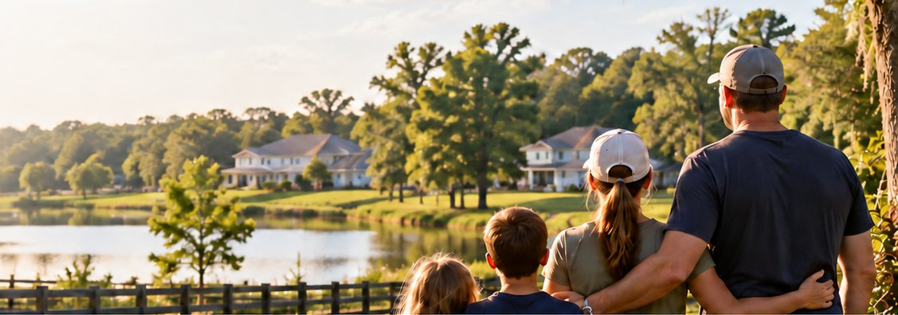
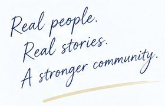
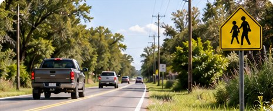
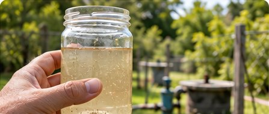
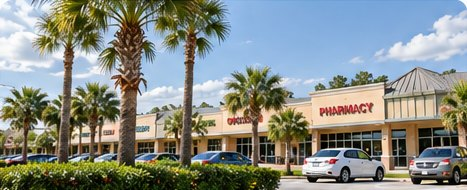

Retire the extra plan. Keep the protections.
Ask the County to retire the separate Community Plan, reconsider related restrictions and retain enforceable safeguards.

Take Action
Keystone–Odessa needs a planning framework that puts the health, safety, and welfare of residents first.
Take Action →Three ways to take action
The 2024 minutes record the Board’s ability to include Keystone–Odessa in the future. Ask commissioners to reopen the decision.
Read the May 9, 2024 minutes →
Ask the County to retire the separate Community Plan, reconsider related restrictions and retain enforceable safeguards.
Help more residents understand the issues affecting Keystone–Odessa.
Facebook • Email • Copy Link
01 — Add your support
Residents can show their support for replacing the current Keystone–Odessa Community Plan policy layer with the Countywide planning framework, together with the necessary protections presented in the Proposal section.
THE COUNTY CAN CHANGE COURSE. The 2024 minutes record the Board’s ability to include the area in the future. Ask commissioners to reopen that decision.
Read the Board’s May 9, 2024 discussion — pages 39–40
Additional record: In its September 23, 2026 response, Planning Commission staff reported that the Board had not requested work on a Keystone–Odessa update. This is a dated status response.
Demo only. Nothing is submitted or saved.
Safer Communities United
For Keystone-Odessa residents
I live in Keystone-Odessa.
For people living in communities adjacent to Keystone
I live in a community adjacent to Keystone.
For anyone who travels on Gunn Highway
I travel on Gunn Highway.
Safer Communities United is a Florida nonprofit civic organization working to protect the health, safety, and welfare of the people of Keystone-Odessa. We educate the public and advocate for a lawful County process to retire the Keystone-Odessa Community Plan and apply the otherwise applicable policies of the Hillsborough County Comprehensive Plan.
Receive news and campaign updates
Volunteer at community outreach events
Help collect petition signatures
Learn about formal membership if offered
Preferred contact
Text
Call
By signing, I ask to join the Safer Communities United supporter network and authorize the organization to contact me about its civic and educational activities. I understand that this form does not create statutory voting membership. Any formal membership will be governed by the corporation's articles, bylaws, and board-approved rules.
Privacy: We will use this information only for organizational communications and will not sell it. We will request separate permission before publicly submitting a supporter list. This is not a donation request.
Return this form to the organizer who provided it.
Community stories
Real-life experiences show how planning issues affect the daily lives of Keystone–Odessa residents.

Illustrative sample stories

Road Safety
“Traffic has increased significantly, and it feels less safe for our children to walk or bike in our neighborhood.”
Keystone–Odessa Resident
September 2026

Water & Septic
“Our well water often has a strange taste and odor. We are concerned about our long-term health and the lack of options for public water.”
Odessa Resident
August 2026

Everyday Access
“We have to drive a long way for groceries, healthcare, and other essential services. It makes daily life more difficult, especially for older residents.”
Keystone Resident
September 2026
Together toward a safer Keystone–Odessa
Let’s support a future where planning responds to the actual conditions of Keystone–Odessa and protects residents, infrastructure, water resources, and the community for current and future generations.
PUT PEOPLE FIRST. RETIRE THE KEYSTONE–ODESSA COMMUNITY PLAN. Read the evidence, read the petition and add your name to the request for the County to initiate the amendment process. Make the community’s demand impossible to ignore.
Read and sign the petition →Residents, property owners, workers and community supporters can read the full petition and add their support through its own signing process. Signing does not join the supporter network or create statutory voting membership.